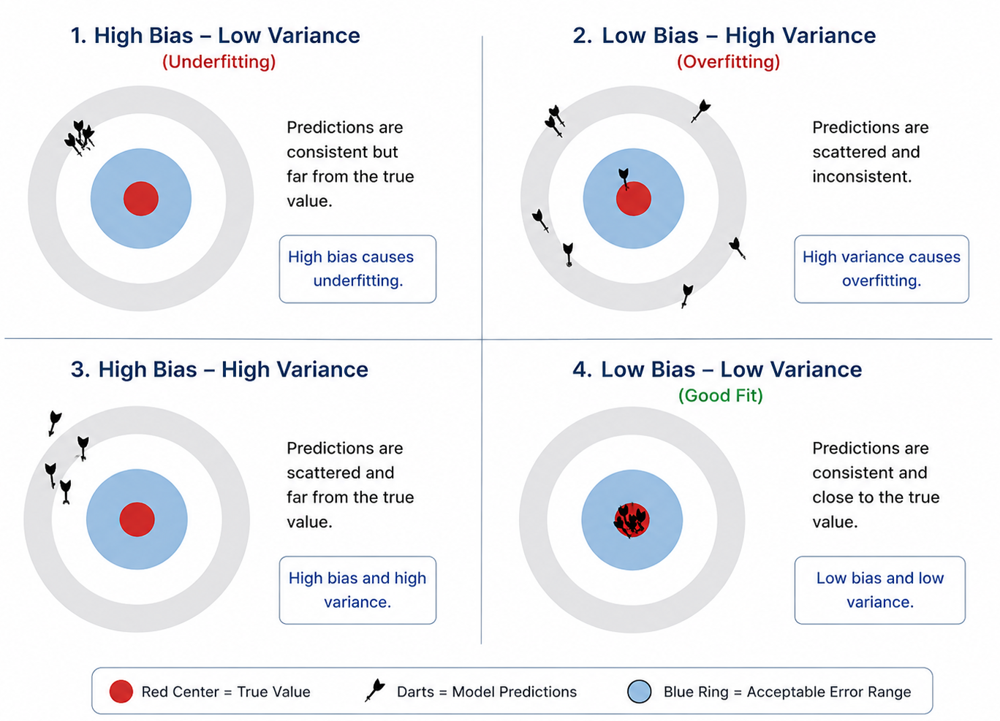
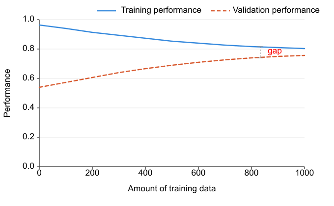
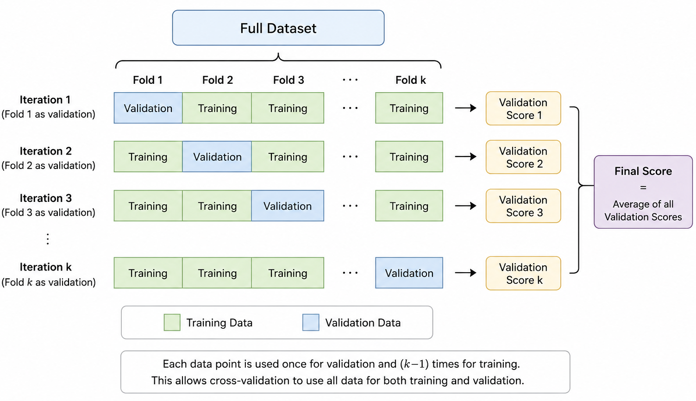

Machine Learning and Deep Learning Fundamentals¶
Before exploring machine learning applications in chemical engineering, molecular science, and materials research, this module introduces the concepts needed to understand and evaluate data-driven models. It covers the main learning approaches, data preparation, model selection, validation, and neural network fundamentals. The emphasis is on sound scientific reasoning: choosing an appropriate method and determining whether its predictions can be trusted.
Learning Objectives¶
- Explain the fundamental principles of machine learning
- Differentiate among the main types of learning tasks
- Identify and mitigate overfitting and underfitting
- Apply appropriate validation and model evaluation methods
- Describe the basic structure and function of neural networks
- Understand key strategies for model optimization and hyperparameter tuning
- Recognize common sources of data leakage in molecular and process datasets
1. What Is Machine Learning?¶
Definition¶
Machine learning (ML) is a branch of artificial intelligence in which algorithms learn useful relationships from data. Instead of writing a separate rule for every possible situation, we use observations to estimate a model that can make predictions or support decisions for new inputs. Learning requires an explicit objective, suitable data, and an evaluation procedure. This description is a paraphrase of concepts discussed by Mitchell (1997), not a quotation from his book.
Traditional Programming¶
Machine Learning¶
Why Use Machine Learning in Science?¶
Machine learning helps chemical engineers and materials scientists analyze complex datasets from experiments, simulations, and industrial processes. It complements mechanistic models and laboratory measurements in several ways:
- Estimate properties, such as solubility, viscosity, and reaction yield, using models trained on relevant experimental or computational measurements
- Identify relationships among composition, operating conditions, and observed responses
- Guide molecular and materials design by prioritizing candidates for further testing
- Support process optimization by identifying operating conditions worth investigating
- Analyze high-dimensional data, including spectra, molecular descriptors, and sensor signals
Main Categories of Machine Learning¶
Supervised Learning¶
Supervised learning uses observations for which both the input features and the target are known. The algorithm estimates a relationship between them so that it can predict the target for new observations. Labels may be continuous measurements or discrete categories.
Common supervised learning tasks include:
- Regression: predicting numerical values, such as solubility, heat capacity, or reaction yield
- Classification: assigning samples to categories, such as toxic versus non-toxic compounds or acceptable versus off-specification process batches
In supervised learning, a model often minimizes an average loss over \(n\) observations:
where \(\mathbf{x}_i\) contains the input features, \(y_i\) is the known target, \(f_{\theta}\) is the prediction model, and \(\ell\) measures prediction error.
Example
# Illustration: a linear regression model using fabricated solubility data.
# The small dataset demonstrates the workflow, not predictive accuracy.
import numpy as np
from sklearn.model_selection import train_test_split
from sklearn.linear_model import LinearRegression
from sklearn.metrics import mean_squared_error
# Columns: molecular weight, polar surface area, and estimated logP.
X = np.array([
[180.1, 45.2, 1.2],
[250.3, 60.1, 2.5],
[320.5, 75.0, 3.8],
[150.2, 30.5, 0.8],
[275.4, 68.2, 2.9],
[210.0, 50.0, 1.7]])
# Invented target values in arbitrary units, for teaching only.
y = np.array([12.5, 8.1, 3.2, 15.0, 6.4, 10.2])
# Split dataset into training and testing sets
X_train, X_test, y_train, y_test = train_test_split(
X, y, test_size=0.2, random_state=42
)
# Create and train the model
model = LinearRegression()
model.fit(X_train, y_train)
# Evaluate the model
y_pred = model.predict(X_test)
mse = mean_squared_error(y_test, y_pred)
print(f"Test MSE (illustrative only): {mse:.3f}")
# Predict the target for a hypothetical molecule with the same descriptors.
new_molecule = np.array([[240.0, 55.0, 2.1]])
prediction = model.predict(new_molecule)
print("Predicted solubility:", prediction[0])
Unsupervised Learning¶
Unsupervised learning analyzes input data without labeled target outcomes. Its purpose is to identify patterns, group similar observations, or construct simpler representations that help researchers explore a dataset.
Common unsupervised learning techniques include:
- Clustering: grouping materials or molecules with similar measured properties or features
- Dimensionality reduction: representing high-dimensional data with fewer variables for visualization, compression, or exploratory analysis
- Anomaly detection: identifying samples that differ noticeably from typical observations
K-means is a common clustering algorithm. It partitions samples into \(K\) groups by minimizing the sum of squared Euclidean distances to their assigned cluster centroids:
where \(\boldsymbol{\mu}_k\) is the centroid of cluster \(C_k\). The number of clusters \(K\) must be specified in advance; a low objective value does not automatically mean the groups are chemically meaningful. K-means uses Euclidean distance, so feature scaling and the molecular representation strongly affect the result. For binary molecular fingerprints, Tanimoto-based methods may better match the intended similarity notion.
Example
# Illustration: K-means on five invented binary molecular descriptors.
import numpy as np
from sklearn.cluster import KMeans
from sklearn.decomposition import PCA
import matplotlib.pyplot as plt
# Rows are hypothetical molecules; columns indicate feature presence (0/1).
# These are not RDKit fingerprints or measured molecular descriptors.
# Molecular features:
# 0 = aromatic ring
# 1 = nitrogen atom
# 2 = hydroxyl group
# 3 = carbonyl group
# 4 = halogen atom
molecular_fingerprints = np.array([
[1, 0, 1, 0, 1],
[1, 0, 1, 0, 0],
[0, 1, 0, 1, 1],
[0, 1, 0, 1, 0],
[1, 1, 0, 0, 1],
[1, 1, 0, 0, 0],
[0, 0, 1, 1, 1],
[0, 0, 1, 1, 0]])
# Create the K-Means clustering model
kmeans = KMeans(n_clusters=3, random_state=42, n_init=10)
# Assign each molecule to a cluster
clusters = kmeans.fit_predict(molecular_fingerprints)
# Display clustering results
for i, cluster_id in enumerate(clusters):
print(f"Molecule {i + 1} belongs to Cluster {cluster_id}")
# Show a 2D PCA projection; clustering was performed in all five dimensions.
X_2d = PCA(n_components=2).fit_transform(molecular_fingerprints)
plt.figure(figsize=(6, 5))
plt.scatter(X_2d[:, 0], X_2d[:, 1], c=clusters, s=100, cmap="tab10")
plt.xlabel("Principal Component 1")
plt.ylabel("Principal Component 2")
plt.title("K-means Clusters (PCA Visualization)")
plt.savefig("clustering.png", dpi=300, bbox_inches="tight")
plt.show()
Reinforcement Learning¶
Reinforcement learning studies how an agent chooses actions while interacting with an environment. The agent observes the consequences of its actions and improves a policy to maximize expected cumulative reward. Unlike ordinary supervised learning, correct actions are not necessarily provided as labels for every state.
An agent may seek to maximize a discounted return of the form
where \(r_{t+k+1}\) is the reward received after a future action and \(0 \leq \gamma < 1\) determines how strongly future rewards are weighted.
In molecular and materials science, reinforcement learning can support applications such as:
- Molecular optimization: proposing structural modifications that improve target properties
- Synthesis planning: selecting reaction steps that lead to a desired compound
- Process control: learning sequential control decisions under operational constraints
2. The Machine Learning Workflow¶
Defining the Machine Learning Problem¶
A reliable ML project begins with a scientific question and a clear definition of success. Before choosing an algorithm, identify the available inputs, the outcome of interest, the intended use of the predictions, and the consequences of different errors.
A typical workflow includes:
- State the objective: identify the property, process variable, or scientific relationship that the model should predict or investigate.
- Select the learning task: decide whether regression, classification, clustering, generative modeling, or another approach best addresses the objective.
- Define success: choose evaluation metrics, a baseline, and practical performance requirements before examining the final test results.
Example:
Build a binary classifier for blood–brain barrier permeability with at least 85% balanced accuracy on a held-out scaffold-based test set, and report sensitivity and specificity.
For chemical engineering, an alternative is to predict reactor conversion from feed composition, temperature, and residence time within a specified operating range.
Data Collection and Preparation¶
The accuracy and usefulness of an ML model depend on the relevance and reliability of its data. Measurements should be checked for inconsistent units, missing values, duplicate observations, uncertain labels, and differences in experimental conditions. The dataset should also represent the chemical compositions or operating conditions where the model will be applied.
Data Sources¶
Scientific data can be collected from a variety of sources, such as:
- Experimental data, obtained from laboratory measurements, pilot plants, and process sensors
- Simulation data, produced by density functional theory (DFT), molecular dynamics (MD), or process simulation software
- Public databases, such as PubChem, ChEMBL, and the Materials Project
Data Quality Checks¶
pandas is a Python library for organizing, exploring, and transforming structured datasets. Its central data structure, the DataFrame, provides a convenient way to work with tabular information. In scientific workflows, pandas is often used to import data, handle missing entries, select or filter observations, calculate summary statistics, and prepare datasets for modeling.
RDKit is an open-source cheminformatics toolkit for processing molecular structures. It can parse SMILES strings, calculate molecular descriptors and fingerprints, visualize chemical structures, and support molecular similarity analysis. A molecular descriptor is a numerical property, such as molecular weight or topological polar surface area, that can serve as an ML input feature.
Example
# Example: clean a small table, validate SMILES, and calculate descriptors.
# This is exploratory cleaning; production thresholds require domain checks.
import pandas as pd
import numpy as np
from rdkit import Chem
from rdkit.Chem import Descriptors
# 1. Create a small example dataset
data = pd.DataFrame({
"molecule_name": [
"Ethanol", "Acetic acid", "Benzene", "Acetone", "Phenol",
"Ethanol", "Invalid molecule", "Large outlier"
],
"smiles": [
"CCO", "CC(=O)O", "c1ccccc1", "CC(=O)C", "c1ccccc1O",
"CCO", "not_a_smiles", "CCCCCCCCCCCCCCCC"
],
"property": [
-0.31, -0.17, -2.13, -0.24, -1.46,
-0.31, np.nan, 50.0 # Artificial extreme value
]
})
# Save dataset as CSV
data.to_csv("molecular_data.csv", index=False)
# 2. Load data
data = pd.read_csv("molecular_data.csv")
print("Original data:")
print(data)
# 3. Check for missing values
print("\nMissing values:")
print(data.isnull().sum())
# 4. Check for duplicates
print("\nNumber of duplicate rows:")
print(data.duplicated().sum())
# Remove duplicate rows
data = data.drop_duplicates(subset=["smiles", "property"])
# 5. Check distributions
print("\nSummary statistics:")
print(data.describe())
# 6. Remove missing targets and invalid molecular structures.
data = data.dropna(subset=["smiles", "property"])
data = data.loc[
data["smiles"].map(lambda s: Chem.MolFromSmiles(s) is not None)
].copy()
# 7. Flag extreme targets using the interquartile range (IQR).
# Do not automatically discard scientifically valid extreme measurements.
q1, q3 = data["property"].quantile([0.25, 0.75])
iqr = q3 - q1
lower, upper = q1 - 1.5 * iqr, q3 + 1.5 * iqr
data["possible_outlier"] = ~data["property"].between(lower, upper)
print("\nPotential outliers:")
print(data.loc[data["possible_outlier"]])
# Use the non-outlier subset solely to illustrate a cleaning decision.
data_clean = data.loc[~data["possible_outlier"]].copy()
print("\nCleaned data:")
print(data_clean)
# 8. Feature engineering with RDKit
def calculate_features(smiles):
"""
Convert a molecule represented by a SMILES string
into numerical molecular descriptors.
"""
mol = Chem.MolFromSmiles(smiles)
# Handle invalid molecules
if mol is None:
return None
features = {
"molecular_weight": Descriptors.MolWt(mol),
"logP": Descriptors.MolLogP(mol),
"num_h_donors": Descriptors.NumHDonors(mol),
"num_h_acceptors": Descriptors.NumHAcceptors(mol),
"tpsa": Descriptors.TPSA(mol),
"num_rotatable_bonds": Descriptors.NumRotatableBonds(mol),
"num_aromatic_rings": Descriptors.NumAromaticRings(mol)
}
return features
# 9. Apply feature engineering to each molecule
feature_rows = []
for _, row in data_clean.iterrows():
features = calculate_features(row["smiles"])
if features is not None:
features["molecule_name"] = row["molecule_name"]
features["smiles"] = row["smiles"]
features["property"] = row["property"]
feature_rows.append(features)
features_df = pd.DataFrame(feature_rows)
# Reorder columns
features_df = features_df[[
"molecule_name", "smiles", "molecular_weight", "logP",
"num_h_donors", "num_h_acceptors", "tpsa",
"num_rotatable_bonds", "num_aromatic_rings", "property"
]]
print("\nFinal feature table:")
print(features_df)
# 10. Save final processed dataset
features_df.to_csv("molecular_features.csv", index=False)
print("\nProcessed dataset saved as molecular_features.csv")
This example identifies possible outliers but does not establish that they are erroneous. If outlier handling or imputation uses estimated statistics, calculate those statistics from the training data only after splitting, ideally within a scikit-learn pipeline.
Training, Validation, and Test Sets¶
An ML model should be assessed on observations that did not influence its parameter fitting or model selection. Otherwise, the reported performance may be overly optimistic.
Critical principle: Keep the final test set separate from training, preprocessing decisions, and hyperparameter selection.
Evaluating only on training observations measures how well a model fits known examples; it does not establish how well predictions generalize. A validation set supports model development, while a test set provides a final, independent estimate.
To reduce this risk, datasets are commonly separated into three subsets:
Training Set¶
The training set is used to fit the model parameters and learn patterns from the available data.
Validation Set¶
The validation set is used to tune hyperparameters, compare approaches, and select the training epoch. Alternatively, cross-validation can serve this purpose.
Test Set¶
The test set is reserved for a final evaluation after model development is complete.
Typical Dataset Split¶
| Dataset | Typical Fraction |
|---|---|
| Training Set | 70% |
| Validation Set | 15% |
| Test Set | 15% |
This is one illustrative allocation, not a universal rule. For small datasets, cross-validation may be more useful; for time-dependent or related samples, the splitting strategy matters more than the exact percentages.
Conceptual Workflow¶
Training Set -> Fit the model
Validation Set -> Tune and compare models
Test Set -> Evaluate final performance
Example
# Example: a 70% / 15% / 15% split of ten illustrative observations.
import numpy as np
from sklearn.model_selection import train_test_split
# 1. Create a small example dataset
# X = input features
# y = target values
X = np.array([
[1.0, 2.0],
[2.0, 1.5],
[3.0, 3.5],
[4.0, 4.5],
[5.0, 5.5],
[6.0, 6.5],
[7.0, 7.5],
[8.0, 8.5],
[9.0, 9.5],
[10.0, 10.5]
])
y = np.array([1, 1, 2, 2, 3, 3, 4, 4, 5, 5])
# 2. First split: training set and temporary set
X_train, X_temp, y_train, y_temp = train_test_split(
X, y, test_size=0.30, random_state=42
)
# 3. Second split: validation set and test set
X_val, X_test, y_val, y_test = train_test_split(
X_temp, y_temp, test_size=0.50, random_state=42
)
# 4. Print the results
print("Training set:")
print("X_train:")
print(X_train)
print("y_train:")
print(y_train)
print("\nValidation set:")
print("X_val:")
print(X_val)
print("y_val:")
print(y_val)
print("\nTest set:")
print("X_test:")
print(X_test)
print("y_test:")
print(y_test)
# 5. Print the sizes
print("\nDataset sizes:")
print("Training set size:", len(X_train))
print("Validation set size:", len(X_val))
print("Test set size:", len(X_test))
Scaffold-Based Splitting¶
In molecular machine learning, scaffold-based splitting separates molecules according to their underlying structural frameworks rather than assigning individual compounds randomly to training, validation, and test sets.
A molecular scaffold represents the main structural backbone of a molecule, commonly defined by its ring systems and the linkers that connect them after peripheral substituents are removed. Molecules sharing the same scaffold often exhibit substantial structural similarity and may also display related chemical or biological properties.
This creates a potential problem with random splitting. Molecules based on the same scaffold can appear in both the training and test sets, meaning that the model may already have encountered very similar structural patterns during training. As a result, test performance can appear better than the model’s true ability to generalize to unfamiliar regions of chemical space.
Scaffold-based splitting keeps molecules with the same scaffold in one subset. A scaffold-held-out test set therefore evaluates transfer to new structural cores. Scaffold overlap between random splits is not automatically data leakage, but it can make the evaluation easier than the intended task of predicting properties for novel chemical frameworks.
Conceptual Example¶
Random Split:
Train -> Toluene (benzene Murcko scaffold)
Test -> Phenol (benzene Murcko scaffold)
The training and test compounds contain closely related
structural frameworks, making the prediction task easier.
Scaffold Split:
Train -> Toluene (benzene Murcko scaffold)
Test -> Pyridine (pyridine Murcko scaffold)
The test molecule belongs to a structurally different
scaffold family that was not represented during training.
Scaffold-based splitting is commonly used in molecular property prediction and drug discovery when the objective is to evaluate whether a model can make reliable predictions for compounds with previously unseen structural cores.
Example
import numpy as np
from rdkit import Chem
from rdkit.Chem.Scaffolds import MurckoScaffold
from sklearn.model_selection import GroupShuffleSplit
# 1. Example molecules
molecules = [
# Benzene scaffold
"Cc1ccccc1", # Toluene
"Oc1ccccc1", # Phenol
"Nc1ccccc1", # Aniline
# Pyridine scaffold
"c1ccncc1", # Pyridine
"CCc1ccncc1", # Ethylpyridine
"Oc1ccncc1", # Hydroxypyridine
# Cyclohexane scaffold
"C1CCCCC1", # Cyclohexane
"CC1CCCCC1", # Methylcyclohexane
"OC1CCCCC1", # Cyclohexanol
# Thiophene scaffold
"c1ccsc1", # Thiophene
"Cc1ccsc1", # Methylthiophene
"Oc1ccsc1" # Hydroxythiophene
]
# Example target property
y = np.array([1.2, 1.4, 1.1, 0.8, 0.9, 0.7,
1.7, 1.6, 1.8, 0.5, 0.6, 0.4])
# 2. Generate simple molecular features
X = []
for smiles in molecules:
mol = Chem.MolFromSmiles(smiles)
if mol is None:
raise ValueError(f"Invalid SMILES: {smiles}")
features = [
mol.GetNumAtoms(), mol.GetNumBonds(), mol.GetRingInfo().NumRings()
]
X.append(features)
X = np.array(X)
# 3. Extract Murcko scaffolds
def get_scaffold(smiles):
mol = Chem.MolFromSmiles(smiles)
if mol is None:
raise ValueError(f"Invalid SMILES: {smiles}")
return MurckoScaffold.MurckoScaffoldSmiles(mol=mol)
scaffolds = np.array([get_scaffold(smiles) for smiles in molecules])
print("Molecular scaffolds:\n")
for smiles, scaffold in zip(molecules, scaffolds):
print(f"{smiles:20s} -> {scaffold}")
# 4. Scaffold-based train/test split
# test_size refers to the fraction of scaffold groups, not the number
# of molecules; actual sample fractions may differ for unequal groups.
splitter = GroupShuffleSplit(
n_splits=1, test_size=0.25, random_state=42
)
train_idx, test_idx = next(
splitter.split(X, y, groups=scaffolds)
)
# 5. Create training and test sets
X_train = X[train_idx]
X_test = X[test_idx]
y_train = y[train_idx]
y_test = y[test_idx]
# 6. Display the split
print("\nTraining set:")
for i in train_idx:
print(molecules[i], " scaffold:", scaffolds[i])
print("\nTest set:")
for i in test_idx:
print(molecules[i], " scaffold:", scaffolds[i])
# 7. Verify scaffold separation
train_scaffolds = set(scaffolds[train_idx])
test_scaffolds = set(scaffolds[test_idx])
print("\nTraining scaffolds:")
print(train_scaffolds)
print("\nTest scaffolds:")
print(test_scaffolds)
shared = train_scaffolds.intersection(test_scaffolds)
print("\nShared scaffolds:", shared)
assert not shared, "The train and test sets share a scaffold."
Bemis–Murcko scaffolds retain ring systems and their linkers, so many acyclic molecules have an empty scaffold. For such datasets, consider a different grouping strategy. Scaffolds determine which samples go into each split; they are not automatically features supplied to the model.
Baselines and Domain of Applicability¶
Before training a complex model, establish a reference prediction. For regression, a common baseline is the training-set mean; for classification, it might be the most frequent class. A model that cannot improve on a suitable baseline may not be learning a useful relationship. Always compute baseline statistics from the training data, not from the final test targets.
Scientific models are also limited by the conditions represented in their training data. A reactor conversion model trained at moderate temperatures may extrapolate poorly to higher temperatures; a molecular model trained on one structural family may fail on unfamiliar scaffolds. State the model’s intended domain of application and investigate uncertainty or extrapolation risk before using predictions to guide expensive experiments or safety-critical decisions.
3. Overfitting and Underfitting¶
The Bias-Variance Tradeoff¶
Underfitting (often associated with high bias):
- The model is not flexible enough to capture the complexity present in the data
- Produces poor results on both the training set and previously unseen data
- Misses important trends, dependencies, and relevant structure
- Often arises when the model is too simple or the available features are not sufficiently informative
Overfitting (often associated with high variance):
- The model is overly flexible compared with the amount and diversity of available training data
- Performs extremely well on the training set but generalizes poorly to new samples
- Fits noise and dataset-specific fluctuations instead of learning robust patterns
- Commonly leads to unreliable predictions on unseen data
Appropriate model complexity:
- The model is expressive enough to capture important trends without excessive flexibility
- Achieves strong performance on both training and test data
- Learns meaningful relationships while avoiding excessive sensitivity to noise
- Generalizes well to new examples that were not used during training

Bias is the systematic error introduced by model assumptions; variance measures how sensitive a fitted model is to the training sample. Model complexity often changes both, but underfitting and overfitting are not exact synonyms for bias and variance. Their balance is assessed using held-out predictions.
Example
# Underfitting vs Good Fit vs Overfitting
import numpy as np
import matplotlib.pyplot as plt
# Reproducibility
np.random.seed(42)
# 1. Generate synthetic dataset
# Input variable
X = np.linspace(0, 10, 50)
# True underlying relationship. Quadratic function + random noise
y = 0.5 * X**2 - 2 * X + 3 + np.random.normal(0, 4, 50)
# 2. Train polynomial models
# Underfitting model: Degree 1 polynomial (linear model)
underfit_model = np.poly1d(np.polyfit(X, y, 1))
# Good fit model: Degree 2 polynomial (matches true relationship)
good_model = np.poly1d(np.polyfit(X, y, 2))
# Overfitting model: Very high-degree polynomial
overfit_model = np.poly1d(np.polyfit(X, y, 15))
# 3. Create smooth plotting grid
X_plot = np.linspace(0, 10, 500)
# 4. Visualize results
plt.figure(figsize=(10, 6))
# Original data points
plt.scatter(X, y, alpha=0.7, label="Training Data")
# Underfitting curve
plt.plot(
X_plot, underfit_model(X_plot), linestyle="--", linewidth=2,
label="Underfitting (degree 1)"
)
# Good fit curve
plt.plot(X_plot, good_model(X_plot), linewidth=2, label="Good fit (degree 2)")
# Overfitting curve
plt.plot(
X_plot, overfit_model(X_plot), linestyle=":", linewidth=2,
label="High complexity (degree 15)"
)
# 5. Labels and formatting
plt.xlabel("Input Feature")
plt.ylabel("Target Value")
plt.title("Underfitting vs Good Fit vs Overfitting")
plt.legend()
plt.grid(True)
plt.savefig("underfitting-overfitting.png", dpi=300, bbox_inches="tight")
plt.show()
Detecting Overfitting¶
One useful diagnostic is a learning curve, which compares performance on training and validation data as the amount of training data increases. Curves plotted against training epochs are also common, but they answer a different question: how performance changes as optimization proceeds.
Typically, two curves are monitored:
- Training performance
- Validation performance

Interpreting Learning Curves¶
Overfitting¶
Overfitting is suggested by a persistent gap between strong training performance and weaker validation performance. For error-based curves, the training error is much lower than the validation error. The gap often shrinks when more representative data are added.
Underfitting¶
Underfitting is suggested when both training and validation errors remain high. This may reflect insufficient model flexibility, uninformative features, excessive regularization, or incomplete optimization.
Good Generalization¶
A model that generalizes well has suitably low validation error and a moderate training-validation gap. The relevant error threshold depends on the application; a small gap alone is not sufficient if both errors are large.
Overfitting:
Training accuracy -> Very high
Validation accuracy -> Clearly lower
Underfitting:
Training accuracy -> Low
Validation accuracy -> Low
Good generalization:
Training accuracy -> High
Validation accuracy -> High and close to training
Example
# Example: learning curves for a deliberately high-capacity polynomial model.
import numpy as np
import matplotlib.pyplot as plt
from sklearn.model_selection import learning_curve, KFold
from sklearn.preprocessing import PolynomialFeatures
from sklearn.pipeline import make_pipeline
from sklearn.linear_model import LinearRegression
# 1. Generate synthetic regression data
np.random.seed(42)
X = np.linspace(0, 10, 100).reshape(-1, 1)
# True relationship is quadratic
y = 0.5 * X[:, 0]**2 - 2 * X[:, 0] + 3
y += np.random.normal(0, 4, 100)
# 2. Define an intentionally complex model
model = make_pipeline(PolynomialFeatures(degree=10), LinearRegression())
# 3. Define cross-validation
cv = KFold(n_splits=5, shuffle=True, random_state=42)
# 4. Compute learning curves
train_sizes, train_scores, val_scores = learning_curve(
model, X, y, train_sizes=np.linspace(0.2, 1.0, 9), cv=cv,
scoring="neg_mean_squared_error", shuffle=True, random_state=42
)
# 5. Convert negative MSE into positive MSE
train_errors = -train_scores.mean(axis=1)
val_errors = -val_scores.mean(axis=1)
train_std = train_scores.std(axis=1)
val_std = val_scores.std(axis=1)
# 6. Plot learning curves
plt.figure(figsize=(10, 6))
plt.plot(train_sizes, train_errors, marker="o", label="Training MSE")
plt.plot(train_sizes, val_errors, marker="o", label="Validation MSE")
plt.fill_between(
train_sizes, train_errors - train_std,
train_errors + train_std, alpha=0.2
)
plt.fill_between(
train_sizes, val_errors - val_std,
val_errors + val_std, alpha=0.2
)
plt.xlabel("Training Set Size")
plt.ylabel("Mean Squared Error")
plt.title("Learning Curves")
plt.legend()
plt.grid(True)
plt.savefig("learning-curves.png", dpi=300, bbox_inches="tight")
plt.show()
# 7. Print numerical results
print("Training set sizes:")
print(train_sizes)
print("\nTraining errors:")
print(train_errors)
print("\nValidation errors:")
print(val_errors)
Preventing Overfitting¶
1. Get More Data¶
Additional independent observations can improve generalization when the current dataset is too small. Molecular data augmentation sometimes helps, but multiple SMILES strings for the same molecule are not new independent measurements.
# Demonstration: generate alternative SMILES representations of one molecule.
from rdkit import Chem
def augment_molecule(smiles):
mol = Chem.MolFromSmiles(smiles)
if mol is None:
raise ValueError(f"Invalid SMILES: {smiles}")
# Generate different SMILES representations
augmented = []
for _ in range(5):
random_smiles = Chem.MolToSmiles(mol, doRandom=True)
augmented.append(random_smiles)
return sorted(set(augmented))
print(augment_molecule("CC(=O)O"))
This augmentation is mainly relevant to sequence models trained on SMILES. For descriptor or fingerprint models, equivalent SMILES commonly produce the same features. Keep all representations of a molecule in the same data split.
2. Regularization¶
Regularization discourages a model from relying excessively on large or numerous fitted parameters. Common penalties include L1, L2, and their combination.
L1 Regularization (Lasso): Encourages sparsity by penalizing the absolute values of model parameters. In linear models, some coefficients may become exactly zero, which can act as a form of feature selection.
Here:
- \(\mathcal{L}_{\mathrm{data}}\) is the prediction loss
- \(w_j\) are the \(p\) penalized coefficients, usually excluding the intercept
- \(\lambda_1\) controls L1 regularization strength
from sklearn.datasets import make_regression
from sklearn.linear_model import Lasso
from sklearn.pipeline import make_pipeline
from sklearn.preprocessing import StandardScaler
X_train, y_train = make_regression(
n_samples=100, n_features=8, noise=10, random_state=42
)
model = make_pipeline(StandardScaler(), Lasso(alpha=0.1))
model.fit(X_train, y_train)
L2 Regularization (Ridge): Penalizes large model parameters by adding the squared magnitude of the weights to the loss function. This helps reduce model complexity and improves generalization.
Here:
- \(\mathcal{L}_{\mathrm{data}}\) is the prediction loss
- \(w_j\) are the penalized coefficients
- \(\lambda_2\) controls L2 regularization strength
from sklearn.datasets import make_regression
from sklearn.linear_model import Ridge
from sklearn.pipeline import make_pipeline
from sklearn.preprocessing import StandardScaler
X_train, y_train = make_regression(
n_samples=100, n_features=8, noise=10, random_state=42
)
model = make_pipeline(StandardScaler(), Ridge(alpha=1.0))
model.fit(X_train, y_train)
Elastic Net: Combines both L1 and L2 regularization, encouraging sparsity while also penalizing large model parameters.
Here:
- \(\mathcal{L}_{\mathrm{data}}\) is the prediction loss
- \(w_j\) are the penalized coefficients
- \(\lambda_1\) controls the strength of the L1 penalty
- \(\lambda_2\) controls the strength of the L2 penalty
from sklearn.datasets import make_regression
from sklearn.linear_model import ElasticNet
from sklearn.pipeline import make_pipeline
from sklearn.preprocessing import StandardScaler
X_train, y_train = make_regression(
n_samples=100, n_features=8, noise=10, random_state=42
)
model = make_pipeline(StandardScaler(), ElasticNet(alpha=0.1, l1_ratio=0.5))
model.fit(X_train, y_train)
These expressions are conceptual; scikit-learn estimators use their own conventions for scaling the data loss and regularization terms. Standardizing continuous input features is often useful because coefficient penalties are sensitive to feature scale. Fit the scaler only on training data, as shown.
3. Cross-Validation¶
Cross-validation is a widely used technique for evaluating machine learning models more reliably, especially when the available dataset is limited. Instead of performing a single train-test split, the data is divided into multiple subsets, allowing the model to be trained and validated several times on different portions of the dataset. See below for more details on cross-validation.
4. Feature Selection¶
Feature selection retains variables that carry useful predictive information and removes variables that are irrelevant or redundant. Reducing input dimensionality can lower computational cost, improve interpretability, and sometimes reduce overfitting. It is particularly helpful for high-dimensional molecular and materials datasets, whose descriptors may be strongly correlated. Feature selection must be fitted inside each training fold to avoid data leakage.
Example
# Example: univariate feature selection fitted only on training data.
import pandas as pd
from sklearn.datasets import make_regression
from sklearn.model_selection import train_test_split
from sklearn.feature_selection import SelectKBest, f_regression
# 1. Generate a synthetic regression dataset
X, y = make_regression(
n_samples=100, n_features=20, n_informative=8,
noise=10, random_state=42
)
# 2. Create a DataFrame with feature names
feature_names = [f"feature_{i}" for i in range(20)]
X = pd.DataFrame(X, columns=feature_names)
# 3. Split the dataset into training and test sets
X_train, X_test, y_train, y_test = train_test_split(
X, y, test_size=0.2, random_state=42
)
# 4. Select the top 8 features
# Eight features contributed to the synthetic target, but an
# individual univariate test may not recover exactly those eight.
selector = SelectKBest(score_func=f_regression, k=8)
# Fit the selector only on the training data
X_train_selected = selector.fit_transform(X_train, y_train)
# Apply the same feature selection to the test set
X_test_selected = selector.transform(X_test)
# 5. Display feature scores
feature_scores = pd.DataFrame({
"Feature": X.columns,
"F-score": selector.scores_,
"Selected": selector.get_support()
})
feature_scores = feature_scores.sort_values(by="F-score", ascending=False)
print("Feature scores:\n")
print(feature_scores)
# 6. Display selected feature names
selected_features = X.columns[selector.get_support()]
print("\nSelected features:")
print(selected_features.tolist())
# 7. Display dataset shapes
print("\nOriginal training shape:")
print(X_train.shape)
print("\nReduced training shape:")
print(X_train_selected.shape)
print("\nOriginal test shape:")
print(X_test.shape)
print("\nReduced test shape:")
print(X_test_selected.shape)
5. Early Stopping (for Neural Networks)¶
Early stopping is a regularization strategy that helps prevent overfitting during neural network training. Although the training loss often continues to decrease, validation performance may eventually stop improving or begin to worsen. Early stopping tracks a validation metric and terminates training when no meaningful improvement occurs for a predefined number of epochs. The model with the best observed validation score should be restored, rather than retaining the weights from the final epoch. Patience is a tuning choice.
6. Dropout (for Neural Networks)¶
Dropout is a regularization method designed to improve the generalization of neural networks. During training, a proportion of neuron activations is randomly set to zero at each iteration. This prevents the network from depending too strongly on particular neurons or pathways and encourages more distributed feature representations. During validation and prediction, dropout is disabled and activations are handled deterministically.
Addressing Underfitting¶
- Increase model capacity: use a more flexible model, add hidden units, or increase network depth
- Reduce regularization: decrease the strength of penalties such as L1, L2, or dropout
- Improve the input features: use domain knowledge to select informative variables or construct better molecular and process representations
- Train for more iterations: increase the number of epochs if the model has not yet converged
- Review the data pipeline: check labels, preprocessing, scaling, and feature construction for errors
4. Cross-Validation¶
Why Cross-Validation?¶
Cross-validation estimates how a modeling procedure performs across several training and validation partitions. Compared with a single split, it reveals how sensitive the score is to the selected observations and uses limited data efficiently. The results are still dependent on the representativeness of the dataset and the splitting strategy.
Use cross-validation for model selection on the development data, then evaluate the chosen model once on an untouched test set. Any learned preprocessing step, such as scaling or feature selection, must be fitted independently inside each training fold.
K-Fold Cross-Validation¶
In \(K\)-fold cross-validation, the development data are divided into \(K\) approximately equal folds. The model is fitted \(K\) times, each time using \(K-1\) folds for training and the remaining fold for validation. Report the mean and variability of the \(K\) scores. These are validation folds, not separate final test sets.

Example
# Example: five-fold cross-validation on synthetic regression data.
from sklearn.datasets import make_regression
from sklearn.linear_model import LinearRegression
from sklearn.model_selection import KFold, cross_val_score
# 1. Generate example regression dataset
X, y = make_regression(
n_samples=100, n_features=3, noise=15, random_state=42
)
# 2. Define machine learning model
model = LinearRegression()
# 3. Perform 5-fold cross-validation
cv = KFold(n_splits=5, shuffle=True, random_state=42)
scores = cross_val_score(model, X, y, cv=cv, scoring="r2")
# 4. Display results
print("R² score for each fold:")
print(scores)
print("\nAverage cross-validation performance:")
print(f"Cross-validation R²: {scores.mean():.3f} ± {scores.std():.3f}")
The code:
- generates a synthetic regression dataset,
- trains a linear regression model,
- evaluates it using 5-fold cross-validation,
- reports the mean and standard deviation of the \(R^2\) score across the folds.
Stratified K-Fold¶
Stratified \(K\)-fold cross-validation aims to preserve approximately the same class proportions in every fold. It is helpful when class frequencies differ substantially, although it cannot guarantee reliable estimates when there are very few minority-class observations.
Leave-One-Out Cross-Validation (LOOCV)¶
Leave-one-out cross-validation (LOOCV) holds out one sample at a time. For \(n\) observations, this requires fitting \(n\) models, each trained on \(n-1\) observations. It makes extensive use of the data but may be computationally expensive and can yield a high-variance estimate of generalization error.
Time Series Cross-Validation¶
Time-series cross-validation respects temporal order by training on earlier observations and validating on later ones. Random splitting can leak information from the future into the past, especially in chemical process data collected from continuous sensors. Use an appropriate time gap when consecutive observations are strongly correlated.
Grouped Cross-Validation¶
When several observations belong to the same molecule, reaction batch, experimental
campaign, material family, or reactor run, they may not be statistically independent.
Grouped splitting keeps all observations from each group in one fold. In scikit-learn,
GroupKFold provides this behavior; for scaffold-based grouping, use the molecular
scaffold as the group identifier. This tests generalization to unseen groups rather
than to additional measurements from known groups.
5. Model Evaluation Metrics¶
Regression Metrics¶
Regression metrics compare numerical predictions with observed targets. Some emphasize typical error size, whereas others penalize large deviations more strongly. Report the units of the target and compare the results with a simple baseline, such as predicting the training-set mean.
Mean Absolute Error (MAE)¶
Mean Absolute Error (MAE) represents the average absolute difference between predicted and observed values. Since the errors are expressed in the same units as the target variable, MAE is straightforward to interpret. Compared with squared-error metrics, it is less strongly affected by a small number of unusually large prediction errors.
Here:
- \(y_i\) are the true values
- \(\hat{y}_i\) are the predicted values
- \(n\) is the number of samples
import numpy as np
from sklearn.metrics import mean_absolute_error
y_true = np.array([2.0, 3.0, 5.0, 4.0])
y_pred = np.array([2.5, 2.8, 4.2, 4.5])
mae = mean_absolute_error(y_true, y_pred)
print(f"MAE: {mae:.3f}")
# Interpretation: Average prediction error in original units
# Lower is better
# Less sensitive to large errors than MSE, but not immune to outliers
Mean Squared Error (MSE) and Root Mean Squared Error (RMSE)¶
Mean squared error (MSE) averages squared prediction errors. Squaring gives large mistakes more weight, which makes MSE sensitive to outliers. Root mean squared error (RMSE) is the square root of MSE and has the same units as the target, making it easier to interpret alongside MAE.
Here:
- \(y_i\) are the true values
- \(\hat{y}_i\) are the predicted values
- \(n\) is the number of samples
import numpy as np
from sklearn.metrics import mean_squared_error
y_true = np.array([2.0, 3.0, 5.0, 4.0])
y_pred = np.array([2.5, 2.8, 4.2, 4.5])
mse = mean_squared_error(y_true, y_pred)
rmse = np.sqrt(mse)
print(f"MSE: {mse:.3f}")
print(f"RMSE: {rmse:.3f}")
# Interpretation: Penalizes large errors more than MAE
# RMSE in same units as target variable
# Lower is better
R² (Coefficient of Determination)¶
The coefficient of determination, \(R^2\), compares the model’s squared prediction error with the error of a constant predictor that uses the mean of the evaluation targets. An \(R^2\) of 1 indicates perfect predictions, 0 matches that constant baseline, and a negative value indicates worse performance. Values depend on the variability of the evaluated targets, so \(R^2\) alone is insufficient for comparing results across datasets.
Here:
- \(y_i\) are the true values
- \(\hat{y}_i\) are the predicted values
- \(\bar{y}\) is the mean of the true values
import numpy as np
from sklearn.metrics import r2_score
y_true = np.array([2.0, 3.0, 5.0, 4.0])
y_pred = np.array([2.5, 2.8, 4.2, 4.5])
r2 = r2_score(y_true, y_pred)
print(f"R²: {r2:.3f}")
# Interpretation:
# R² = 1: Perfect predictions
# R² = 0: As good as predicting mean
# R² < 0: Worse than predicting mean
# R² can be negative; its upper bound is 1
Visualization¶
Plots of predictions and residuals can expose systematic errors that summary metrics miss. A predicted-versus-observed plot is useful for checking calibration, scatter, and whether errors increase for particular property ranges.
import matplotlib.pyplot as plt
import numpy as np
from sklearn.metrics import mean_squared_error, r2_score
y_true = np.array([2.0, 3.0, 5.0, 4.0])
y_pred = np.array([2.5, 2.8, 4.2, 4.5])
rmse = np.sqrt(mean_squared_error(y_true, y_pred))
r2 = r2_score(y_true, y_pred)
plt.figure(figsize=(8, 8))
plt.scatter(y_true, y_pred, alpha=0.5)
limits = [min(y_true.min(), y_pred.min()), max(y_true.max(), y_pred.max())]
plt.plot(limits, limits, 'r--', linewidth=2, label='Perfect prediction')
plt.xlabel('True Values')
plt.ylabel('Predicted Values')
plt.title(f'R² = {r2:.3f}, RMSE = {rmse:.3f}')
plt.legend()
plt.axis('equal')
plt.savefig('regression-predictions.png', dpi=300, bbox_inches='tight')
plt.show()
Classification Metrics¶
Classification metrics are used to assess models that assign samples to discrete classes or categories. Different metrics capture different aspects of predictive performance, including overall accuracy, the ability to identify positive cases, and performance when classes are imbalanced. Choosing suitable metrics is particularly important in scientific and medical applications, where different types of classification errors may have very different consequences.
Confusion Matrix¶
A confusion matrix compares the predicted class labels with the true labels and summarizes the number of correct and incorrect predictions. It provides the basic counts used to calculate many common classification metrics. For a binary classification problem:
| Predicted Positive | Predicted Negative | |
|---|---|---|
| Actual Positive | True Positive (TP) | False Negative (FN) |
| Actual Negative | False Positive (FP) | True Negative (TN) |
The confusion matrix makes it easier to see which kinds of mistakes the model is making, such as failing to detect positive samples or incorrectly labeling negative samples as positive.
from sklearn.metrics import confusion_matrix, ConfusionMatrixDisplay
import matplotlib.pyplot as plt
# 1 = active (positive); 0 = inactive (negative).
y_true = [0, 0, 0, 1, 1, 1, 1, 1]
y_pred = [0, 0, 1, 1, 1, 0, 1, 0]
cm = confusion_matrix(y_true, y_pred, labels=[0, 1])
disp = ConfusionMatrixDisplay(confusion_matrix=cm, display_labels=['Inactive', 'Active'])
disp.plot()
plt.show()
Accuracy, Precision, Recall, F1-Score¶
Accuracy measures the fraction of correctly classified samples:
Precision measures how many predicted positive cases are actually correct:
Recall, also called sensitivity, measures the fraction of actual positive cases that the model correctly identifies:
The F1-score combines precision and recall into a single metric using their harmonic mean:
The F1-score emphasizes the positive class and is useful when both precision and recall matter. It does not include true negatives and should not be used alone when false positives and false negatives have very different costs.
from sklearn.metrics import (accuracy_score, precision_score, recall_score, f1_score)
y_true = [0, 0, 0, 1, 1, 1, 1, 1]
y_pred = [0, 0, 1, 1, 1, 0, 1, 0]
accuracy = accuracy_score(y_true, y_pred)
precision = precision_score(y_true, y_pred, zero_division=0)
recall = recall_score(y_true, y_pred, zero_division=0)
f1 = f1_score(y_true, y_pred, zero_division=0)
print(f"Accuracy: {accuracy:.3f} - (TP + TN) / Total")
print(f"Precision: {precision:.3f} - TP / (TP + FP) - How many predicted positives are correct?")
print(f"Recall: {recall:.3f} - TP / (TP + FN) - How many actual positives did we identify?")
print(f"F1-score: {f1:.3f} - Harmonic mean of precision and recall")
ROC Curve and AUC¶
The receiver operating characteristic (ROC) curve shows the tradeoff between the true-positive rate and false-positive rate as the classification threshold changes:
- True Positive Rate (TPR)
- False Positive Rate (FPR)
The True Positive Rate is:
The False Positive Rate is:
The area under the ROC curve (ROC-AUC) summarizes how well a model ranks positive examples above negative ones. A value of 1 indicates perfect ranking, whereas 0.5 corresponds to chance-level ranking. It does not indicate how well probability predictions are calibrated or which decision threshold to use.
Example
# Example: ROC curve for a binary classification model.
import matplotlib.pyplot as plt
from sklearn.datasets import make_classification
from sklearn.model_selection import train_test_split
from sklearn.linear_model import LogisticRegression
from sklearn.metrics import roc_curve, roc_auc_score
# 1. Generate example classification dataset
X, y = make_classification(
n_samples=1000, n_features=10, n_informative=5,
n_redundant=2, random_state=42
)
# 2. Split dataset into training and test sets
X_train, X_test, y_train, y_test = train_test_split(
X, y, test_size=0.2, stratify=y, random_state=42
)
# 3. Train classification model
model = LogisticRegression(max_iter=1000)
model.fit(X_train, y_train)
# 4. Get probability predictions
# Probability of belonging to class 1
y_prob = model.predict_proba(X_test)[:, 1]
# 5. Calculate ROC curve and AUC
fpr, tpr, thresholds = roc_curve(y_test, y_prob)
auc = roc_auc_score(y_test, y_prob)
print(f"AUC score: {auc:.3f}")
# 6. Plot ROC curve
plt.figure(figsize=(8, 6))
plt.plot(fpr, tpr, linewidth=2, label=f"ROC curve (AUC = {auc:.3f})")
# Random classifier reference line
plt.plot([0, 1], [0, 1], "k--", label="Chance-level ranking")
plt.xlabel("False Positive Rate")
plt.ylabel("True Positive Rate")
plt.title("Receiver Operating Characteristic (ROC) Curve")
plt.legend()
plt.grid(True)
plt.savefig("roc-curve.png", dpi=300, bbox_inches="tight")
plt.show()
# 7. AUC interpretation
print("\nAUC Interpretation:")
print("1.0 -> Perfect classifier")
print("0.5 -> Random guessing")
print("<0.5 -> Positive and negative scores tend to be reversed")
Precision-Recall Curve¶
The precision–recall (PR) curve displays precision versus recall as the decision threshold varies. It is particularly useful when the positive class is rare, because it highlights the tradeoff between finding positive cases and limiting false alarms. Its baseline precision is approximately the positive-class prevalence.
Examples include:
- detection of rare toxic compounds,
- identification of active molecules in a large screening library,
- diagnosis and other rare-event detection tasks.
Example
# Example: precision–recall curve with an imbalanced target.
import matplotlib.pyplot as plt
from sklearn.datasets import make_classification
from sklearn.model_selection import train_test_split
from sklearn.linear_model import LogisticRegression
from sklearn.metrics import precision_recall_curve, average_precision_score
# 1. Generate example classification dataset
# Imbalanced dataset
X, y = make_classification(
n_samples=1000, n_features=10, n_informative=5,
n_redundant=2, weights=[0.9, 0.1], random_state=42
)
# 2. Split dataset into training and test sets
X_train, X_test, y_train, y_test = train_test_split(
X, y, test_size=0.2, stratify=y, random_state=42
)
# 3. Train classification model
model = LogisticRegression(max_iter=1000)
model.fit(X_train, y_train)
# 4. Get probability predictions
# Probability of belonging to class 1
y_prob = model.predict_proba(X_test)[:, 1]
# 5. Compute Precision-Recall curve
precision, recall, thresholds = precision_recall_curve(y_test, y_prob)
# Average Precision (AP)
ap = average_precision_score(y_test, y_prob)
print(f"Average Precision (AP): {ap:.3f}")
# 6. Plot Precision-Recall curve
plt.figure(figsize=(8, 6))
plt.plot(recall, precision, linewidth=2,
label=f"PR curve (AP = {ap:.3f})")
plt.axhline(y_test.mean(), color="gray", linestyle="--",
label="Positive-class prevalence")
plt.xlabel("Recall")
plt.ylabel("Precision")
plt.title("Precision-Recall Curve")
plt.legend()
plt.grid(True)
plt.savefig("pr-curve.png", dpi=300, bbox_inches="tight")
plt.show()
# 7. Interpretation
print("\nInterpretation:")
print("- High precision means few false positives")
print("- High recall means few false negatives")
print("- Precision-Recall curves are especially useful")
print(" for imbalanced datasets")
Choosing the Right Metric¶
For regression:
- MAE: expresses a typical error in the target’s units
- RMSE: penalizes large errors more strongly than MAE
- \(R^2\): compares squared prediction error with a mean-prediction baseline; always report an absolute error metric alongside it
For classification:
- Roughly balanced classes: accuracy, sensitivity, specificity, and F1 as appropriate
- Rare positive class: precision, recall, and average precision (PR performance)
- Ranking across thresholds: ROC-AUC, with class prevalence also reported
- Unequal error costs: choose a decision threshold based on the scientific or operational cost of false positives and false negatives
For chemical and molecular applications:
- Early compound screening: high recall can help retain potentially active compounds, though precision matters when follow-up experiments are costly
- Toxicity screening: if toxic is the positive class, prioritize recall to reduce dangerous false negatives; also report precision and specificity
- Property prediction: choose MAE or RMSE based on the significance of large errors, and include property units and an appropriate baseline
6. Hyperparameter Tuning¶
What are Hyperparameters?¶
Hyperparameters control model structure or training and are chosen by the researcher, usually using validation data or cross-validation. They differ from learned parameters, such as neural network weights or linear regression coefficients. Examples include:
- learning rate and batch size in neural network training,
- network depth and number of hidden units,
- regularization strength,
- number and maximum depth of decision trees,
- kernel and penalty settings in support vector machines (SVMs).
Select a simple baseline first. Perform hyperparameter optimization on the training portion using cross-validation; do not use the final test set to choose the search space or tune the model. The examples below use synthetic data to demonstrate the interfaces.
Grid Search¶
Grid search evaluates each combination of values in a specified hyperparameter grid. It is easy to interpret but becomes expensive when the grid has many dimensions.
from sklearn.model_selection import GridSearchCV
from sklearn.ensemble import RandomForestRegressor
from sklearn.datasets import make_regression
from sklearn.model_selection import train_test_split
# Generate a small illustrative dataset and reserve a final test set.
X, y = make_regression(n_samples=250, n_features=8, noise=15, random_state=42)
X_train, X_test, y_train, y_test = train_test_split(
X, y, test_size=0.2, random_state=42
)
# Define parameter grid
param_grid = {
"n_estimators": [50, 100],
"max_depth": [5, None],
"min_samples_leaf": [1, 3]
}
# Grid search with cross-validation
grid_search = GridSearchCV(
RandomForestRegressor(random_state=42, n_jobs=1),
param_grid=param_grid,
cv=3,
scoring="neg_mean_absolute_error",
n_jobs=-1
)
grid_search.fit(X_train, y_train)
print(f"Best parameters: {grid_search.best_params_}")
print(f"Best cross-validation MAE: {-grid_search.best_score_:.3f}")
# Use best model
best_model = grid_search.best_estimator_
print(f"Held-out test R²: {best_model.score(X_test, y_test):.3f}")
Random Search¶
Random search samples a fixed number of configurations from specified distributions. It can explore larger search spaces within a given computational budget.
from sklearn.model_selection import RandomizedSearchCV
from scipy.stats import randint, uniform
from sklearn.datasets import make_regression
from sklearn.model_selection import train_test_split
from sklearn.ensemble import RandomForestRegressor
X, y = make_regression(n_samples=250, n_features=8, noise=15, random_state=42)
X_train, X_test, y_train, y_test = train_test_split(
X, y, test_size=0.2, random_state=42
)
# Define parameter distributions
param_distributions = {
"n_estimators": randint(30, 121),
"max_depth": randint(3, 16),
"min_samples_leaf": randint(1, 5),
"max_features": uniform(0.3, 0.7)
}
random_search = RandomizedSearchCV(
RandomForestRegressor(random_state=42, n_jobs=1),
param_distributions,
n_iter=10, # Increase for a more thorough search.
cv=3,
scoring="neg_mean_absolute_error",
n_jobs=-1,
random_state=42,
verbose=0
)
random_search.fit(X_train, y_train)
print(f"Best parameters: {random_search.best_params_}")
print(f"Best cross-validation MAE: {-random_search.best_score_:.3f}")
print(f"Held-out test R²: {random_search.score(X_test, y_test):.3f}")
Bayesian Optimization¶
Bayesian optimization uses results from previous trials to select promising new
hyperparameter combinations. It is especially useful when each evaluation is
computationally expensive. The optional example uses scikit-optimize, which can
be installed with pip install scikit-optimize.
from skopt import BayesSearchCV
from skopt.space import Real, Integer
from sklearn.datasets import make_regression
from sklearn.ensemble import RandomForestRegressor
from sklearn.model_selection import train_test_split
X, y = make_regression(n_samples=250, n_features=8, noise=15, random_state=42)
X_train, X_test, y_train, y_test = train_test_split(
X, y, test_size=0.2, random_state=42
)
# Define search space
search_spaces = {
"n_estimators": Integer(30, 120),
"max_depth": Integer(3, 15),
"min_samples_leaf": Integer(1, 4),
"max_features": Real(0.3, 1.0)
}
bayes_search = BayesSearchCV(
RandomForestRegressor(random_state=42, n_jobs=1),
search_spaces,
n_iter=10,
cv=3,
scoring="neg_mean_absolute_error",
n_jobs=-1,
random_state=42
)
bayes_search.fit(X_train, y_train)
print(f"Best parameters: {bayes_search.best_params_}")
print(f"Best cross-validation MAE: {-bayes_search.best_score_:.3f}")
print(f"Held-out test R²: {bayes_search.score(X_test, y_test):.3f}")
7. Neural Networks Basics¶
Artificial neural networks build predictions by applying successive learned transformations to an input vector. A feedforward network contains an input layer, one or more hidden layers, and an output layer. Each hidden layer combines a linear transformation with a nonlinear activation function, allowing the model to represent relationships more complex than those captured by ordinary linear regression.
For hidden layer \(\ell\), a common operation is
where \(W^{(\ell)}\) contains trainable weights, \(\mathbf{b}^{(\ell)}\) contains biases, and \(\sigma\) is an activation function such as ReLU. For a regression task, the final layer may have one output without a nonlinear activation.
Training minimizes a loss such as mean squared error. Automatic differentiation computes gradients of the loss with respect to model parameters by applying the chain rule, and an optimizer updates the parameters. For gradient descent,
where \(\eta\) is the learning rate. Practical neural networks typically train on minibatches and may use optimizers such as Adam, learning rate schedules, early stopping, and regularization to improve stability and generalization.
Example
# Minimal PyTorch regression example: a tiny synthetic process dataset.
import numpy as np
import torch
from torch import nn
rng = np.random.default_rng(42)
torch.manual_seed(42)
# Inputs represent normalized temperature and residence time.
X = rng.uniform(0.0, 1.0, (200, 2)).astype(np.float32)
y = (0.6 * X[:, 0] + 0.3 * X[:, 1]**2).astype(np.float32)
y = y[:, None] # Shape: [samples, 1]
indices = rng.permutation(len(X))
train_idx, test_idx = indices[:160], indices[160:]
X_train = torch.from_numpy(X[train_idx])
y_train = torch.from_numpy(y[train_idx])
X_test = torch.from_numpy(X[test_idx])
y_test = torch.from_numpy(y[test_idx])
model = nn.Sequential(nn.Linear(2, 16), nn.ReLU(), nn.Linear(16, 1))
optimizer = torch.optim.Adam(model.parameters(), lr=0.01)
criterion = nn.MSELoss()
for epoch in range(200):
model.train()
optimizer.zero_grad()
prediction = model(X_train)
loss = criterion(prediction, y_train)
loss.backward()
optimizer.step()
model.eval()
with torch.no_grad():
test_rmse = torch.sqrt(criterion(model(X_test), y_test)).item()
print(f"Test RMSE (synthetic units): {test_rmse:.4f}")
The inputs and targets above are invented; the example illustrates the network’s forward pass, gradient computation, optimizer update, and held-out evaluation.
8. Common Pitfalls and Best Practices¶
Data Leakage¶
Data leakage occurs when information unavailable at prediction time enters model development. For example, fitting a scaler to the entire dataset before splitting uses information from validation or test samples. Related molecules, experimental replicates, or time-adjacent process samples can also lead to overly optimistic evaluation if the split does not match the intended use case.
The following shows a problematic pattern and its correction:
from sklearn.datasets import make_regression
from sklearn.model_selection import train_test_split
from sklearn.preprocessing import StandardScaler
X, y = make_regression(n_samples=100, n_features=5, random_state=42)
# WRONG: fitting before splitting uses the statistics of all samples.
# X_scaled = StandardScaler().fit_transform(X)
# X_train, X_test, y_train, y_test = train_test_split(X_scaled, y)
# CORRECT: split first; fit the scaler only on training data.
X_train, X_test, y_train, y_test = train_test_split(
X, y, test_size=0.2, random_state=42
)
scaler = StandardScaler()
X_train_scaled = scaler.fit_transform(X_train)
X_test_scaled = scaler.transform(X_test)
When using cross-validation, preprocessing must be refitted inside each fold.
A scikit-learn Pipeline automates this:
from sklearn.datasets import make_regression
from sklearn.feature_selection import SelectKBest, f_regression
from sklearn.ensemble import RandomForestRegressor
from sklearn.model_selection import KFold, cross_val_score
from sklearn.pipeline import Pipeline
from sklearn.preprocessing import StandardScaler
X, y = make_regression(n_samples=150, n_features=20, random_state=42)
pipeline = Pipeline([
("scaler", StandardScaler()),
("selector", SelectKBest(score_func=f_regression, k=10)),
("model", RandomForestRegressor(n_estimators=50, random_state=42))
])
# The scaler and selector are fitted only on each training fold.
cv = KFold(n_splits=3, shuffle=True, random_state=42)
scores = cross_val_score(pipeline, X, y, cv=cv, scoring="r2")
print(f"Mean CV R²: {scores.mean():.3f}")
Not Using Validation Set¶
Repeatedly choosing hyperparameters based on test-set results makes that set part of the model selection process. Reserve the test set until the end of development. The following example tunes a classifier using cross-validation on training data:
from sklearn.datasets import make_classification
from sklearn.model_selection import GridSearchCV, train_test_split
from sklearn.ensemble import RandomForestClassifier
from sklearn.metrics import balanced_accuracy_score
X, y = make_classification(n_samples=250, n_features=10, random_state=42)
X_train, X_test, y_train, y_test = train_test_split(
X, y, test_size=0.2, stratify=y, random_state=42
)
search = GridSearchCV(
RandomForestClassifier(random_state=42),
param_grid={"n_estimators": [50, 100], "max_depth": [3, None]},
cv=3,
scoring="balanced_accuracy"
)
search.fit(X_train, y_train)
print("Selected hyperparameters:", search.best_params_)
# Evaluate once on the untouched test set.
y_pred = search.predict(X_test)
score = balanced_accuracy_score(y_test, y_pred)
print(f"Final test balanced accuracy: {score:.3f}")
Ignoring Class Imbalance¶
If most samples belong to one class, a model can achieve high accuracy while failing to identify the minority class. Examine class frequencies, choose appropriate metrics, and consider weighting or resampling within training folds.
from sklearn.datasets import make_classification
from sklearn.model_selection import train_test_split
from sklearn.ensemble import RandomForestClassifier
from sklearn.metrics import classification_report
X, y = make_classification(
n_samples=500, n_features=10, weights=[0.9, 0.1],
random_state=42
)
X_train, X_test, y_train, y_test = train_test_split(
X, y, test_size=0.2, stratify=y, random_state=42
)
# Weight classes inversely to their frequency in the training set.
model = RandomForestClassifier(
n_estimators=100, class_weight="balanced", random_state=42
)
model.fit(X_train, y_train)
y_pred = model.predict(X_test)
print(classification_report(y_test, y_pred, zero_division=0))
For data resampling, tools such as SMOTE from imbalanced-learn should be
applied only to training folds, preferably through an imblearn.pipeline.Pipeline.
Generating synthetic fingerprints by interpolation may produce chemically
unrealistic features, so consider the molecular representation carefully.
Not Checking for Errors¶
# Check numerical features and regression targets for obvious problems.
import numpy as np
from sklearn.datasets import make_regression
def validate_data(X, y):
"""Basic validation for numerical regression inputs."""
X = np.asarray(X, dtype=float)
y = np.asarray(y, dtype=float).reshape(-1)
if X.ndim != 2:
raise ValueError("X must be a 2D feature matrix")
if X.shape[0] != y.shape[0]:
raise ValueError("X and y have different numbers of samples")
if X.shape[0] == 0:
raise ValueError("Empty dataset")
# Check for NaN
if not np.isfinite(X).all() or not np.isfinite(y).all():
raise ValueError("X or y contains NaN or infinite values")
# Check for constant features
constant_features = np.count_nonzero(X.std(axis=0) == 0)
if constant_features > 0:
print(f"Warning: {constant_features} constant features detected")
# Check target distribution
print(f"Target distribution: mean={y.mean():.3f}, std={y.std():.3f}")
print(f"Target range: [{y.min():.3f}, {y.max():.3f}]")
return True
X, y = make_regression(n_samples=100, n_features=5, random_state=42)
validate_data(X, y)
Also inspect units, duplicated structures, mislabeled observations, physically impossible values, and whether data cover the intended range of application.
Forgetting to Set Random Seeds¶
# Set common random seeds for more reproducible experiments.
import random
import numpy as np
import torch
def set_seed(seed=42):
random.seed(seed)
np.random.seed(seed)
torch.manual_seed(seed)
torch.cuda.manual_seed_all(seed)
if torch.cuda.is_available():
torch.backends.cudnn.deterministic = True
torch.backends.cudnn.benchmark = False
set_seed(42)
Random seeds improve repeatability, but bitwise reproducibility across different hardware, libraries, or parallel operations is not always guaranteed. Record package versions, data splits, and training settings alongside the results.
9. Key Takeaways¶
Essential Concepts¶
- Plan the split: separate training, validation, and test observations before fitting data-dependent transformations; account for related samples and time order
- Use appropriate validation: compare models using a held-out validation set or cross-validation chosen for the scientific question
- Check generalization: compare training and validation metrics for signs of underfitting, overfitting, and distribution shift
- Select meaningful metrics: report property units, baseline performance, and error types relevant to the application
- Tune systematically: compare a limited set of meaningful hyperparameters without using the final test set
- Check data quality: investigate missing values, duplicates, inconsistent measurements, potential outliers, and leakage
- Improve reproducibility: set random seeds, record library versions, and document how the dataset was split
- Document assumptions: describe the intended prediction domain, feature definitions, experimental conditions, and model limitations
Machine Learning Workflow Summary¶
1. Define the question and success criteria
2. Collect, inspect, and document data
3. Split data using a scientifically appropriate strategy
4. Fit preprocessing within each training fold
5. Establish baseline models
6. Cross-validate and tune candidate models
7. Refit the selected model on development data
8. Evaluate once on the held-out test set
9. Report uncertainty, limitations, and domain of applicability
10. Deploy, monitor, or plan further experiments
Warning Signs¶
- Training performance much better than validation: investigate overfitting
- Both training and validation performance poor: investigate underfitting, noisy targets, and unsuitable features
- Validation performance unexpectedly better than training: review the metrics, regularization, data split, and possible leakage; it is not proof of leakage
- Large variation across validation folds: investigate sample size, heterogeneous data, and model instability
- Nearly perfect performance: check task difficulty, duplicate samples, target-derived features, and the split procedure
10. Additional Resources¶
Books¶
- Mitchell, T. M. (1997). Machine Learning. McGraw-Hill.
- Géron, A. Hands-On Machine Learning with Scikit-Learn, Keras, and TensorFlow.
- Bishop, C. M. Pattern Recognition and Machine Learning.
- Goodfellow, I., Bengio, Y., and Courville, A. Deep Learning.